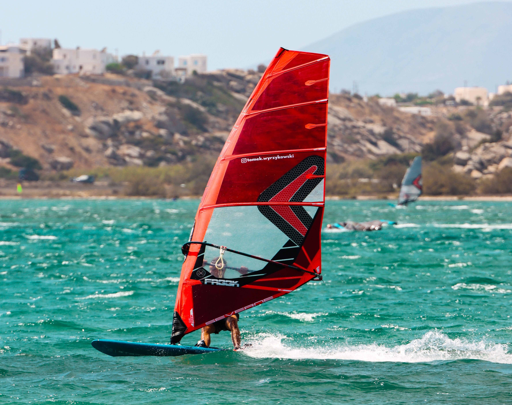
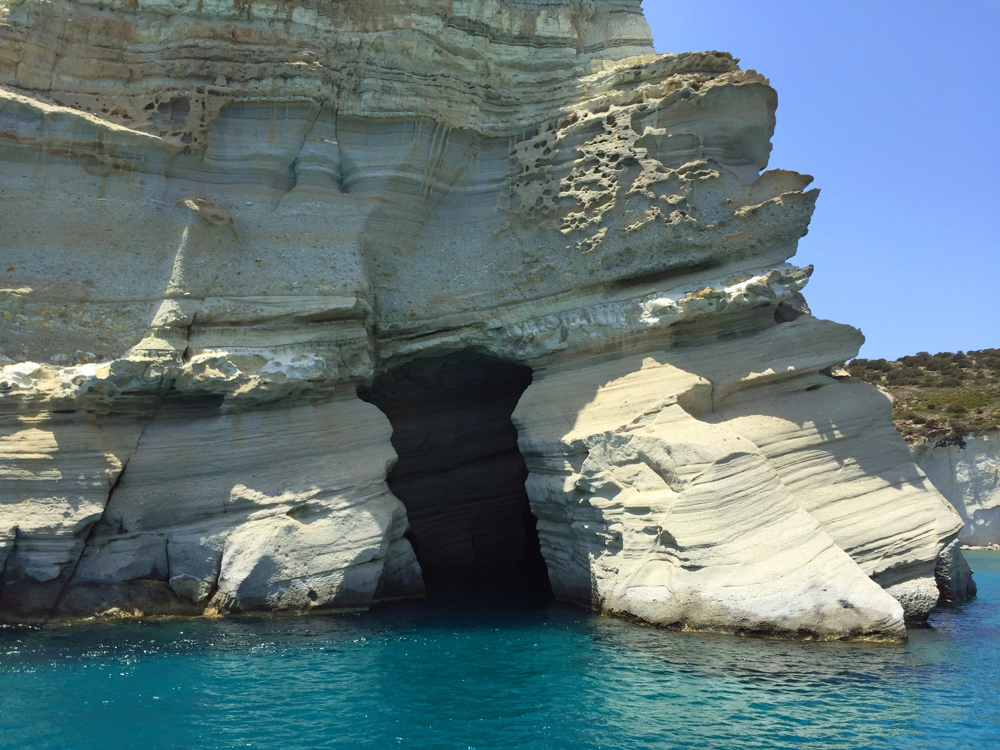
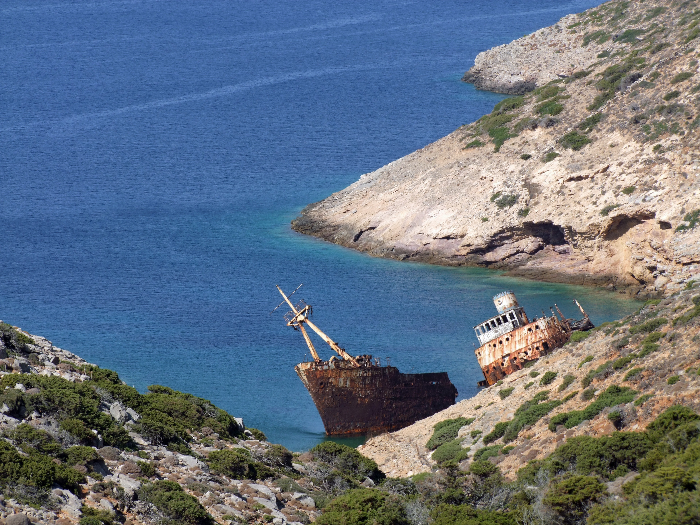
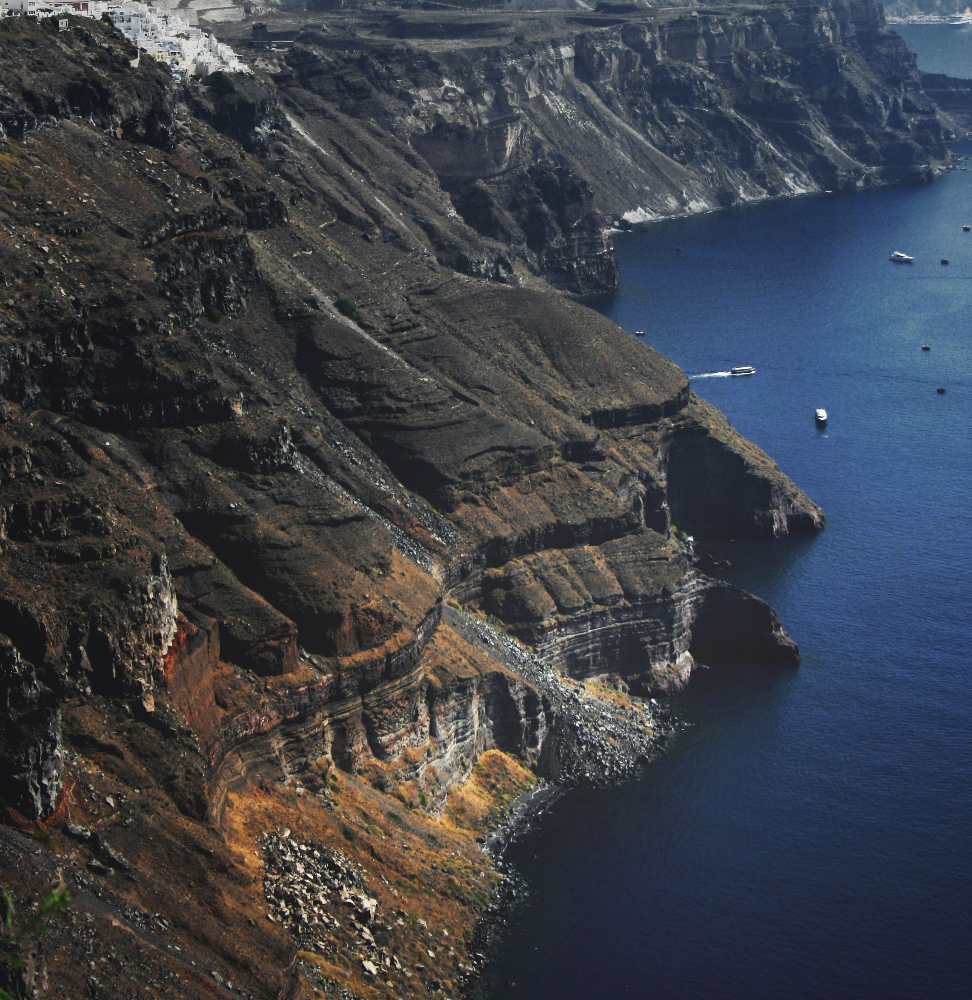
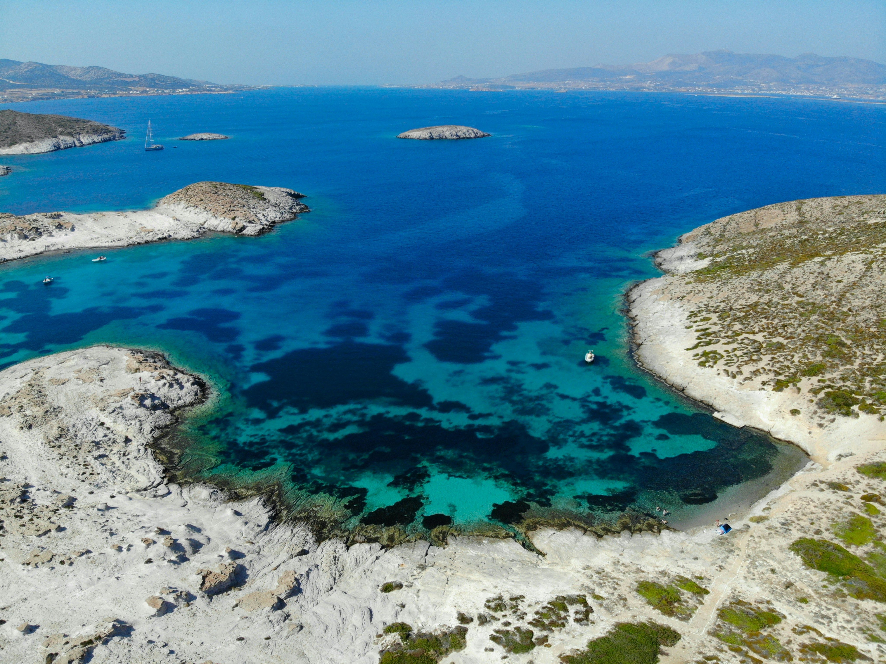
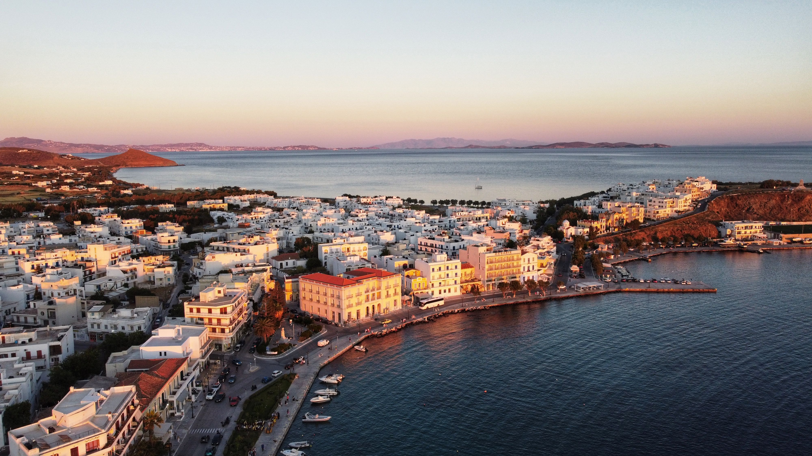
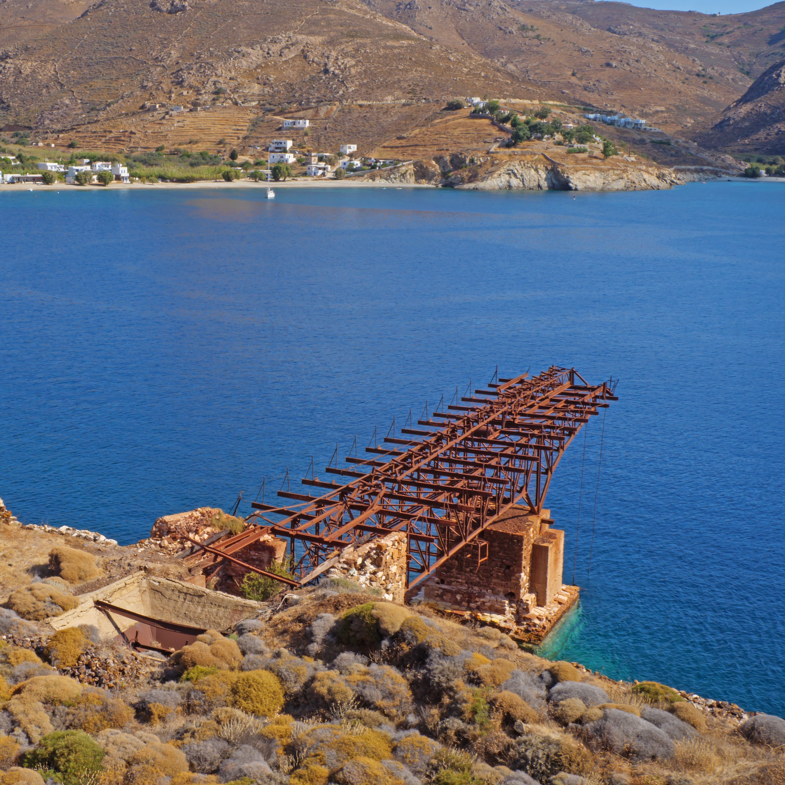
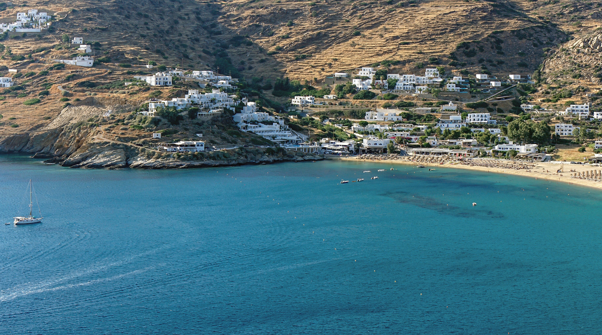

Windsurfing στην Χρυσή Ακτή
💨 Windsurfing - ΠάροςΗ Πάρος θεωρείται η Μέκκα του Windsurfing στην Ευρώπη. Η Χρυσή Ακτή και η Νέα Χρυσή Ακτή φιλοξενούν ιδανικούς σταθερούς ανέμους (thermal μελτέμια) καθ' όλο το καλοκαίρι. Εδώ διοργανωνόταν για χρόνια το Παγκόσμιο Πρωτάθλημα, και οι οργανωμένες σχολές προσφέρουν κορυφαίο εξοπλισμό για αρχάριους και επαγγελματίες.
Δες τον Οδηγό Πάρου →
Kitesurfing στην Μικρή Βίγλα
🦅 Kitesurfing - ΝάξοςΗ παραλία της Μικρής Βίγλας στη Νάξο είναι ένας διεθνής παράδεισος για Kitesurfing. Λόγω της γεωγραφικής της θέσης, δημιουργείται ένα φυσικό φαινόμενο (funnel effect) που ενισχύει την ένταση του αέρα. Ο κόλπος γεμίζει καθημερινά με εκατοντάδες πολύχρωμους αετούς, προσφέροντας ένα μοναδικό θέαμα και ιδανικές συνθήκες για άλματα.
Δες τον Οδηγό Νάξου →
Scuba Diving στις Θαλάσσιες Σπηλιές
🤿 Καταδύσεις - Μήλος & ΚίμωλοςΗ ηφαιστειακή δομή της Μήλου κρύβει κάτω από την επιφάνεια της θάλασσας έναν αληθινό θησαυρό. Οι καταδύσεις στο Κλέφτικο και τη σπηλιά της Συκιάς προσφέρουν περάσματα μέσα από υποθαλάσσιες αψίδες, υφάλους και σπηλιές με απίστευτα παιχνιδίσματα του φωτός. Στα Ελληνικά της Κίμωλου, μπορείς να κολυμπήσεις με μάσκα πάνω από μια ολόκληρη βυθισμένη αρχαία πόλη!
Δες τον Οδηγό Μήλου →
Εξερεύνηση Βυθού & Ιστορικά Ναυάγια
🚢 Diving / Snorkeling - ΑμοργόςΗ Αμοργός, το νησί του «Απέραντου Γαλάζιου», φημίζεται για την απίστευτη ορατότητα του βυθού της που ξεπερνά τα 40 μέτρα! Ο κορυφαίος πόλος έλξης για snorkeling είναι το μισοβυθισμένο εμπορικό πλοίο «Ολυμπία» στον κόλπο της Καλοταρίτισσας. Επιπλέον, τα καταδυτικά κέντρα του νησιού οργανώνουν εξορμήσεις σε βαθιά κατακόρυφα τοιχώματα βράχων γεμάτα θαλάσσια ζωή.
Δες τον Οδηγό Αμοργού →
Ηφαιστειακό Diving & Ύφαλοι Λάβας
🌋 Καταδύσεις - ΣαντορίνηΗ Σαντορίνη προσφέρει μια εντελώς μοναδική καταδυτική εμπειρία λόγω της καλντέρας της. Οι δύτες έχουν την ευκαιρία να κολυμπήσουν δίπλα σε επιβλητικά κατακόρυφα τοιχώματα μαύρης ηφαιστειακής λάβας, να εξερευνήσουν υποθαλάσσιες σπηλιές και να θαυμάσουν τη θαλάσσια ζωή που αναπτύσσεται γύρω από τους ενεργούς ηφαιστειακούς υφάλους, με την ορατότητα του νερού να είναι εξαιρετική.
Δες τον Οδηγό Σαντορίνης →
Ιστορικό Καταδυτικό Πάρκο & Ναυάγια
⚓ Ιστορικά Ναυάγια - Κέα (Τζιά)Η Κέα θεωρείται ένας από τους κορυφαίους προορισμούς παγκοσμίως για τεχνικές καταδύσεις ναυαγίων. Στον βυθό της κρύβονται μερικά από τα σπουδαιότερα πλοία της ιστορίας, όπως ο θρυλικός «Βρετανικός» (αδελφό πλοίο του Τιτανικού) και το ιστορικό τροχήλατο ατμόπλοιο «Πατρίς». Για τους αρχάριους, το προστατευμένο καταδυτικό πάρκο προσφέρει υπέροχες διαδρομές γεμάτες αρχαίους αμφορείς και πλούσιο βυθό.
Δες τον Οδηγό Κέας →
Snorkeling & Κρυστάλλινοι Ύφαλοι στο Δεσποτικό
🐠 Snorkeling / Diving - ΑντίπαροςΗ Αντίπαρος και το ακατοίκητο γειτονικό νησάκι Δεσποτικό περιβάλλονται από ρηχούς, πεντακάθαρους υφάλους και θαλάσσιες σπηλιές που είναι ιδανικές για χαλαρές καταδύσεις και snorkeling. Τα τυρκουάζ νερά της περιοχής προσφέρουν εκπληκτική καθαρότητα, επιτρέποντας ακόμα και στους αρχάριους με μια απλή μάσκα να εξερευνήσουν τον μαγικό βυθό και τις κρυφές βραχοσπηλιές δίπλα στα αρχαία ευρήματα.
Δες τον Οδηγό Αντιπάρου →
Surfing & Κύματα στην Κολυμπήθρα
🏄♂️ Surf (Κύμα) - ΤήνοςΑν η Πάρος είναι για τον άνεμο, η Τήνος είναι το μοναδικό νησί στις Κυκλάδες για αυθεντικό Surf με σανίδα σε κύμα! Η μεγάλη παραλία της Κολυμπήθρας είναι πλήρως εκτεθειμένη στους δυνατούς βοριάδες, δημιουργώντας σταθερά και μεγάλα κύματα. Εκεί λειτουργεί μια από τις πιο γνωστές και εναλλακτικές σχολές surf στην Ελλάδα, ιδανική για όσους θέλουν να μάθουν να «δαμάζουν» τα κύματα του Αιγαίου.
Δες τον Οδηγό Τήνου →
Υποβρύχια Μεταλλεία & Ναυάγια του Β' Παγκοσμίου
⚓ Ιστορικό Diving - ΣέριφοςΗ Σέριφος προσφέρει έναν από τους πιο μυστηριώδεις βυθούς, στενά συνδεδεμένο με τη μεταλλευτική της ιστορία. Στο Μεγάλο Λιβάδι, οι δύτες μπορούν να εξερευνήσουν τον υποβρύχιο χώρο όπου κατέληγαν οι ράγες των μεταλλείων, γεμάτο παλιό σιδηροδρομικό εξοπλισμό. Το highlight του νησιού όμως είναι το βυθισμένο γερμανικό πολεμικό αεροπλάνο τύπου Arado του Β' Παγκοσμίου Πολέμου, το οποίο στέκει σε εξαιρετική κατάσταση σε μικρό βάθος.
Δες τον Οδηγό Σερίφου →
Action Water Sports & Cavern Diving
🚀 Θαλάσσια Σπορ & Scuba - ΊοςΗ απέραντη χρυσή αμμουδιά του Μυλοπότα στην Ίο είναι το απόλυτο κέντρο δράσης για τη νεολαία. Εδώ θα βρεις τα πιο σύγχρονα action sports: από Wakeboard και Θαλάσσιο Σκι μέχρι ατελείωτο παιχνίδι με καναπέδες και δαχτυλίδια. Παράλληλα, τα οργανωμένα καταδυτικά κέντρα της Ίου προσφέρουν μοναδικές διαδρομές στο γειτονικό νησάκι Πεταλίδι, διάσημο για τους υποβρύχιους τοίχους του και τις ρηχές, ασφαλείς σπηλιές.
Δες τον Οδηγό Ίου →